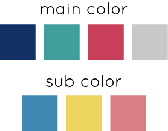

適部署チャート
2019.05-2019.06
担当：デザイン
技術：Illustrator/Photoshop
URL：https://geikousai-ncu.com/chart/index.html
※スマートフォンの横画面でご覧ください
芸術工学部では、個性豊かな作品の展示、ステージ企画、模擬店、本格カフェなど芸術工学部の学生全員で作る学祭が行われます。 自分が挑戦したいことに関する部署に各々が所属し、3年生を中心に活動します。 私はweb部署に所属し、広報活動の一貫として、 どの部署に入れば良いか分からない学生向けに適部署チャートのデザインを制作しました。
サブカラーを含む６色のメインカラーが決まっていたので、 その色をメインに使いデザインを始めました。 2019年の学祭のテーマが英語で咀嚼音を意味する"nomnom"だったので、 食べ物を連想できるようなデザインにしようと思い立ちます。
案をいくつか出し、決まった案をさらにブラッシュアップしました。
適部署チャートの制作開始時点では、学祭のメインビジュアルや告知サイトの デザインなども決まっていなかったので少し苦戦しましたが、 告知サイトのデザインを担当するweb部署のメンバーとイメージを擦り合わせながら作成しました。 今回はコーディングは担当していないのですが、アニメーションをつけていただいたので、よりポップな印象になったと思います。